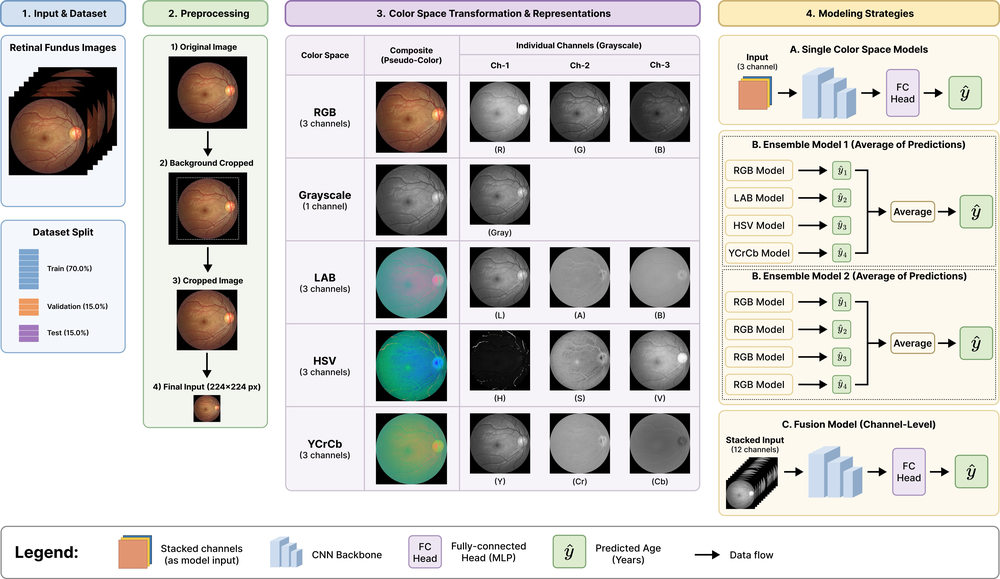

Exploring the Impact of Alternative Color Spaces in Deep Retinal Age Prediction from Fundus Images

Abstract
Deep learning models can achieve good performance in predicting age from retinal fundus images, but how retinal image color representations and their integration strategies affect this performance has not been systematically investigated. In this study, we examined the impact of input color spaces on retinal age prediction using a standardized ResNet-50 pipeline and a dataset of 9,857 fundus images split into training, validation, and test sets. Specifically, we evaluated single models using Grayscale, RGB, Lab, HSV, and YCrCb inputs in both full color representation and individual-channel forms. We also designed two ensemble approaches: Ensemble 1, averaging predictions across the four single models trained on RGB, Lab, HSV, and YCrCb, and Ensemble 2, averaging predictions from four single RGB models trained with different random seeds. Finally, we tested an early-fusion model that concatenates the four color representations into a 12-channel input. Across all approaches, Ensemble 1 achieved the best performance with a mean absolute error of 4.60 years, followed by Ensemble 2 (4.74) and the single RGB model (4.91), while all remaining models showed higher errors. Overall, these findings suggest that different color representations are most beneficial when combined through ensembling, rather than when used independently or combined through early fusion.